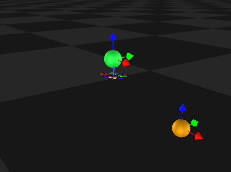

RESL previously explored using OpenAI’s implementations of various algorithms but had the most success with Proximal Policy Optimization (PPO). Thus, as we began development, we chose to further explore PPO. To begin leading the quadrotor to effectively perform path following, we first focused on directly extending RESL’s PPO work by evaluating different reward functions.
Original Reward Function:
Originally, the reward function penalized the quadrotor based on a number of different factors, including
- Distance between quadrotor’s position and goal position
- The amount of control effort exerted by the quadrotor
- Whether the quadrotor crashed or not
- Orientation along the Z axis
- Yaw
- Uncontrolled rotation about the Z axis
- How drastically the rotor thrusts in the current action differed from those of the previous action
- Velocity
- Attitude
Restructuring Goal Representation
RESL previously trained the quadrotor to hover at a specific point with its z orientation perpendicular to the xy-plane. To do so, they provided one goal point to the environment. In order to adapt the environment to represent a goal trajectory, we added support for multiple goals. Additionally, we updated the visualization tool to show multiple goals and change the color of each goal reached by the quadrotor. Figure 3 shows two goals in the visualization tool.

Figure 3: Visualization tool displaying 2 goals, one of which has been reached by the quadrotor. Note that the quadrotor attempts to maintain its z orientation perpendicular to the xy-plane.